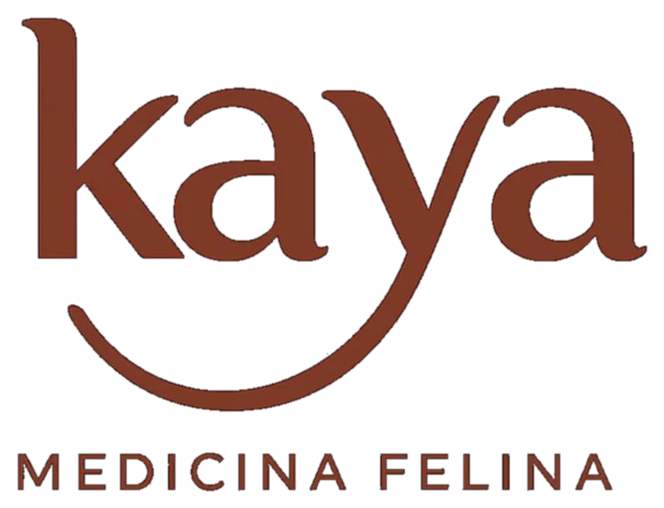
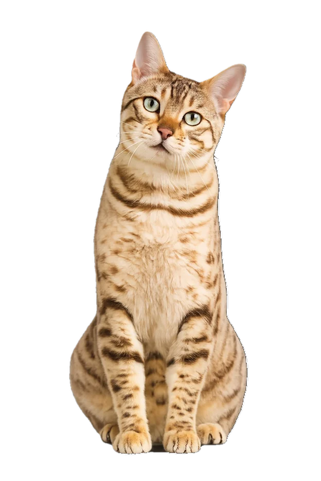

Paranavaí · Paraná · Brasil
Na Kaya, cada felino recebe atenção especializada num ambiente pensado para o bem-estar e o conforto dos gatos — sem estresse, sem cães.

Espaço projetado para reduzir o estresse dos gatos. Sem barulho, sem cães, com aromas e iluminação adequados para felinos.
Toda a equipe é dedicada exclusivamente à medicina felina. Conhecemos profundamente o comportamento e as necessidades dos gatos.
Monitoramento em ambiente tranquilo e exclusivo para felinos, com cuidados individuais para cada paciente internado.
Conheça nossa história
A Kaya nasceu do amor pelos gatos e do desejo de oferecer um cuidado individualizado e especial para eles.
Fundada pela Médica Veterinária Clavdia Paula Borges Cardoso Bulguerolli, bióloga de formação e apaixonada por felinos, a Kaya é a Primeira Clínica Veterinária Exclusiva para Gatos da nossa cidade. Aqui, cada detalhe foi pensado para garantir acolhimento, tranquilidade e bem-estar aos nossos pacientes e, claro, aos seus responsáveis também.
"Nossa história começou com um sonho: criar um espaço onde os gatos fossem compreendidos em sua essência. Onde o atendimento fosse calmo, respeitoso e baseado na ciência, mas também no carinho e na confiança."
Ao longo dos anos, seguimos nos dedicando à medicina felina com responsabilidade, atualização constante e escuta atenta. Porque, para nós, cada gato é único e merece ser tratado com todo o cuidado.
Seja bem-vindo à Kaya. Um lugar onde os gatos são prioridade e onde a relação com o responsável é construída com empatia, informação e parceria.
Serviços que oferecemos
Na Kaya, cada atendimento é pensado com carinho, respeito e dedicação exclusiva aos gatos. Oferecemos serviços que acompanham todas as fases da vida do seu felino, sempre priorizando bem-estar, saúde e confiança.
Atendimento clínico completo e individualizado, com escuta atenta ao responsável e manejo gentil com o gato. Avaliamos cada detalhe para oferecer o diagnóstico mais preciso e o cuidado mais adequado ao seu felino.
Imunização segura e personalizada, respeitando o histórico e o estilo de vida do seu gatinho. Aplicamos os protocolos mais atuais da medicina felina para garantir proteção duradoura com o menor estresse possível.
Coletas e encaminhamento para exames laboratoriais e de imagem, com interpretação especializada em medicina felina. Resultados analisados com profundidade para o diagnóstico mais assertivo do seu gato.
Ambiente calmo e exclusivo para gatos, com monitoramento constante e cuidados especializados durante o tratamento. Nossos internados ficam em espaços individuais, seguros e enriquecidos, para uma recuperação mais tranquila.
Avaliações periódicas para acompanhar a saúde geral e prevenir doenças de forma precoce. Os check-ups são fundamentais para garantir qualidade de vida ao longo de todas as fases do seu gato — desde filhote até a melhor idade.
Estrutura preparada para procedimentos cirúrgicos, com foco no bem-estar e na recuperação dos gatos. Realizamos cirurgias com anestesia segura e protocolos específicos para felinos, do pré ao pós-operatório.
Funcionamento & Localização
Venha nos visitar ou entre em contato. Estamos prontos para cuidar do seu felino com toda a atenção que ele merece.
Fale com a gente
Prefere marcar pela agenda online ou conversar diretamente pelo WhatsApp? Escolha como preferir — estamos aqui.
Solicitar agendamento
Informe os dados abaixo e seu WhatsApp será aberto com a mensagem já preenchida. Simples e rápido.
Ao clicar, você será redirecionado ao WhatsApp com os dados preenchidos.